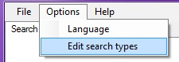
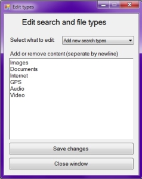
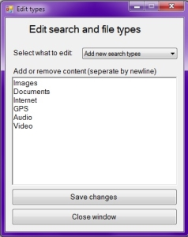

The edit screen for adding, deleting and updating types is found under
'Options' -> 'Edit search types'.

Example of adding default types
The edit screen for adding, deleting and updating types is found under
'Options' -> 'Edit search types'.

Example of adding default types
The setup for adding types to search for (e.g. images, gps, audio/video files, etc.) can be quick and easily added in the Edit window accessible through 'Options' on the menubar. At first time startup you will get an error message, saying that the file "SearchTypes/SearchTypes.txt" is empty. This will disappear as types get added to the file.
You can also access these files by locating the folder of this applications executable and open the folder "SearchTypes". As you add more search types, there will be created seperate textfiles, each containing the possibility of adding fileextensions, filetypes or other needed content for the related search type. If you choose to add content to the textfiles manually, remember to seperate each entry by newline.
To delete all entries and files, you can select "Add new search types" from the dropdown, delete all the content in the textbox and press "Save changes".
<Current version 1.0.0.0>